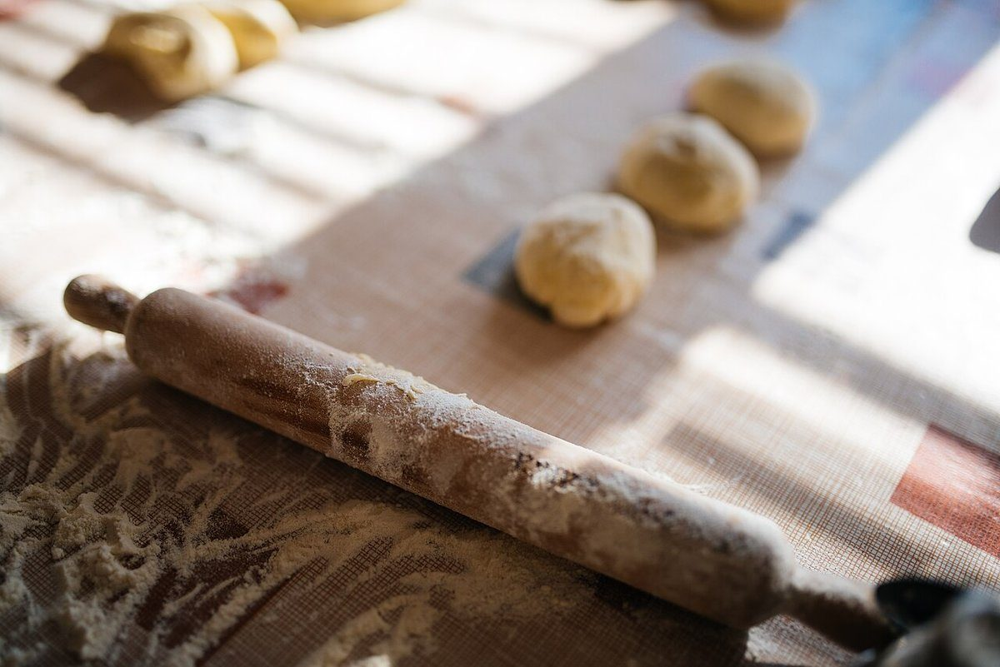

制作側の連想
「ふくふく」を、ふくらみの目盛りに
店名の由来は分かりません。制作側は「ふく」の音の繰り返しから、生地がふくらんでいく様子を連想し、このサイトを計量カップの目盛りのように作りました。ページを進むごとに倍率が上がります(×1.0から×3.0)。制作側の連想で、お店の理念・由来とは無関係です。
ふくらみの目盛り(イメージ)
×1.0 から ×3.0 まで。
写真はお店や釧路市のものではなく、目盛りの雰囲気に合わせて選んだ、国外・撮影地不明のフリー素材です。
- ×1.0

小麦粉(イメージ) - ×1.5

麺棒と小さな生地(イメージ) - ×2.0

天板のロールパン(イメージ) - ×2.5

丸いパン(イメージ) - ×3.0

かごの丸いパン(イメージ)